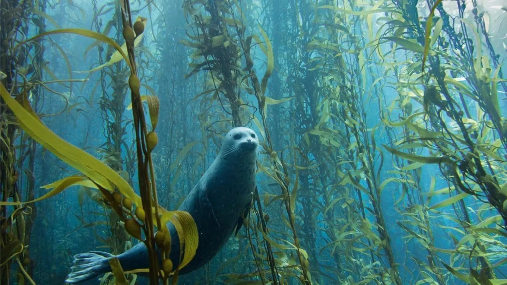

Arctic Seaweed is a Norwegian company growing and supplying some of the highest quality, ecologically cultivated seaweed in the world. The team has developed and tested scalable production systems for sustainably cultivated seaweeds such as Winged Kelp and Sugar Kelp.

In this edited conversation with Peter Green, the founder of Arctic Seaweed Kim Kristensen spoke about his mission and his perspective on the seaweed industry.
What was the motivation behind creating Arctic Seaweed?
I always wanted to do something different and build something from nothing. The idea for Arctic Seaweed was born four or five years ago after meeting another young entrepreneur through a mentorship scheme. We realised that there were opportunities available in seaweed and started developing some initial mental concepts into industrial processes. All these efforts have led to where the company is now and it has been really motivating to do something meaningful.
Where do you see the industry going in the next 10 years?
From a producer point of view, we are approaching the catch-up effect as demand is increasing. The continued growing interest from the consumer is very positive and is motivating companies to reach-out to suppliers.
The challenge so far has been volumes in Europe. We don't produce enough volume to be considered a serious contender in business to business, fast-moving consumer goods.
I think we are getting close to the mark where the demand is going to increase significantly. As a sustainable, locally sourced ingredient, seaweed is a great product.

How do you monitor the quality of your seaweed?
There are a few aspects related to quality. Firstly, you have the technical quality which involves assessing the composition of the plant. This means that you send a sample for analysis and monitor good and bad properties. We also send samples for microbiology analysis to document whether or not we have any pathogens present. Then you have less quantifiable metrics like how the seaweed looks to the eye and whether or not there are any external organisms like bryozoans or other grazers present.
What's next for Arctic Seaweed?
Expansion. our plan is to go to 1000 tonnes by 2024 and then try to double that by 2030.
What advice would you give to someone interested in building companies in this area?
Make sure that you continually have enough funding for the long term. It is going to take more time and more money than you think. You need patience.

Interviewer: Peter Green